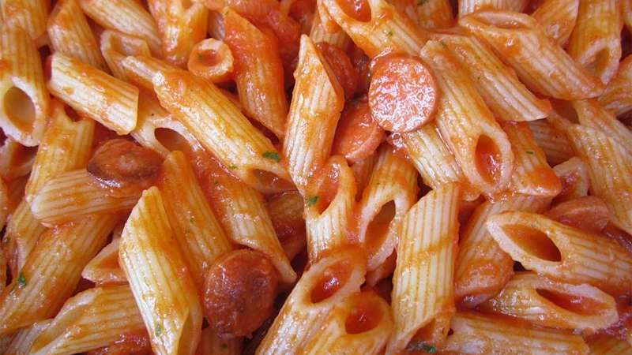

Penne al pomodoro
Ingredienti
Di seguito riportiamo gli ingredienti per preaparare il nostro piatto
- 300g di penne
- Olio
- Basilico
- 100g di salsa di pomodoro
Preparazione
- Cuocere la pasta
- Mettere la salsa nella pentola con olio
- Mescolare la pasta
- Servire il piatto con il basilico sopra